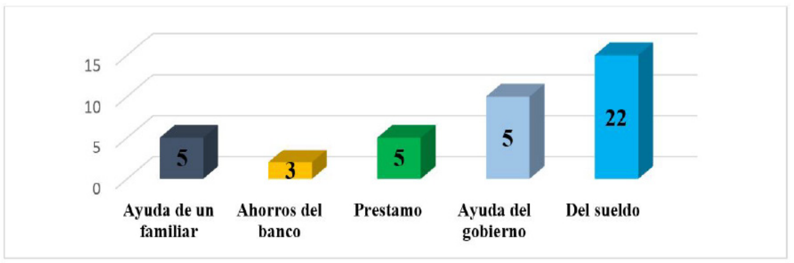

Introducción
Actualmente en el mundo entero se enfrenta
una crisis y emergencia, debido al covid19 “El
impacto económico será extremadamente
violento ya que combina un choque de
demanda y un choque de oferta. Considerando
la magnitud del choque y su dimensión
temporal, la clave está en las medidas tomadas
por los gobiernos para apoyar la actividad
y, sobre todo, la viabilidad de los actores
económicos. A diferencia de la crisis de 2009,
los gobiernos actualmente muestran una gran
capacidad de respuesta, con medidas que se
implementan incluso antes de que comience el
impacto negativo en la economía (Hernández
et al., &Manzano et al., 2020). El desafío será
doble: apoyar a las empresas y los hogares
durante la crisis, asegurando la recuperación
más rápida y fuerte posible de la economía.
Para los bancos centrales, se trata de garantizar
la liquidez de los mercados financieros y evitar
que los flujos de financiación a las empresas
no se agoten, asegurando así la liquidez de
los bancos. Para los gobiernos, el primer paso
será compensar la pérdida de ingresos de los
hogares y las empresas; y garantizar préstamos
a las empresas. En el muy corto plazo, la
prioridad es evitar quiebras, por medio de la
extensión de plazos o préstamos puente. La
capacidad de hacerlo para todas las empresas
afectadas y, en muy poco tiempo, sigue siendo
incierta.” (Pino, 2020).
“Colombia cuenta con 25.042.000 Personas
Económicamente Activas –PEA- de los cuales
22.393.000 son Personas Ocupadas -PO- o
inmersas en el mercado laboral según el
DANE (2020) el país cuenta con una tasa de
desempleo que a febrero de 2020 llegó a
niveles de 12,2%. Es de resaltar que, para el
trimestre móvil de noviembre a enero, de las
personas trabajadoras solo 11.868.000 son
formales y el resto (10.525.000) son informales,
lo que quiere decir que con la actual crisis
el primer sector afectado será el de los informales que representan el 47,7% de la
fuerza de trabajo colombiana. Ahora bien, los
aspectos de empleo en Colombia tienen una
relación directa con las Pymes; estas son las
que más puestos de trabajo generan, a enero
de 2020 empleaban a 8.768.061 trabajadores.
Así las cosas, el riesgo y fragilidad de nuestra
economía es tan grande que el Gobierno
Nacional tiene la obligación moral de entrar
a intervenirla para proteger los empleos”
(Otoya & Serna 2020). Además, todo ello se
produce en una situación en la que aún no se
ha recuperado la situación de aumento de la
pobreza derivada de la última crisis económica
y de sus efectos sociales derivados de las
situaciones de desigualdad y de aumento del
riesgo de exclusión social. (Ahumada, 2020)
En las principales ciudades de Colombia el
47,6% de ocupados está en el sector informal,
y Cúcuta en el cuarto lugar por ciudades, el
mayor desempleo se registra en Neiva (37,4%)
y el menor en Barranquilla (14,1%). Por encima
del promedio nacional están, entre otras,
Ibagué (35,5%), Cúcuta (31,7%), Cali (28,2%) y
Bogotá (25,2%). Por debajo, Medellín (24,7%),
Bucaramanga (23,1%) y Cartagena (20,5%).
En Cúcuta, respecto a la cifra de desempleo
de julio de 2019 (16,2%), el índice aumentó
15,5%. En comparación con junio de este año,
hay una leve disminución pues la ciudad y su
área metropolitana se ubicaron en el cuarto
puesto a nivel nacional, posición en la que aún
están, con un indicador de 33,4%.En materia
de trabajo informal, Cúcuta es la ciudad con el
mayor índice, con 67,7%, seguida de Sincelejo,
con 63,3%. El menor se registra en Manizales,
con 37,7% mes. (Cámara de Comercio de
Cúcuta, s.f)
Esta pandemia ha afectado a millones de
personas, ya sea porque perdieron a un
ser querido, las empresas entran a quiebra,
muchas personas desempleadas, por lo
tanto, esto afecta directa o indirectamente
a todos, no solo en el ámbito económico, también aspectos psicológicos. La situación
de Colombia es difícil, puesto que para frenar
esta propagación de la pandemia se cerraron
empresas, por lo tanto, baja la producción y
el consumo, y aumenta el desempleo, además
las personas que trabajan informal se ven aún
más afectadas. (Naciones Unidas, 2020).
“El gobierno colombiano en forma responsable
ha asegurado en primera instancia un flujo de
dinero equivalente a 14,8 billones de pesos para
mitigar la primera fase de la pandemia. Este es
un periodo de alta incertidumbre y por tanto
las estrategias han sido inicialmente tomar
recursos de fondos de estabilización como el
FAE que era lo más rápido. El siguiente paso han
sido los créditos con organismos multilaterales
como el banco mundial (250 millones de
dólares). Una vez agotados estos mecanismos
debería pasarse a otros extraordinarios como
el préstamo del banco de la república, pero
sin duda seria en una fase posterior. Algunos
ya hablan de liberar la regla fiscal colombiana
para permitir mayor endeudamiento. Sin
embargo, estas medidas, aunque necesarias,
serán insuficientes por varios motivos, entre
ellos: (La clase media vulnerable corresponde
a 40% de la población colombiana (8 millones
de hogares) (Ramírez, 2020). La pobreza
multidimensional en Colombia es de 19,6% y
esta crisis para estos grupos es de un impacto
mayor. Un 67% de los colombianos están en la
franja de vulnerabilidad de la pobreza, con un
riesgo alto de caer en ella. Los programas de
asistencia social como Familias en Acción son
necesarios y cruciales, pero en realidad son
10 millones de hogares en necesidad y estos
programas pueden llegar solo a 7 millones lo
cual genera una gran brecha de cobertura.)”
(Pino, 2020)
Para (Bonet-Morón, 2020)“la rama económica
de servicios aparece como la más afectada,
donde se destacan las actividades de
alojamiento y servicios de comida, servicios
inmobiliarios, servicios administrativos, actividades profesionales y técnicas,
construcción y comercio”.
El gobierno colombiano, ha anunciado una
serie de medidas destinadas tanto a contener
la propagación del virus como a soportar a los
sectores de la economía que podrían verse
afectados debido a la coyuntura actual. Sin
embargo, el gobierno ha reiterado que las
políticas evolucionaran de forma dinámica
según la situación lo amerite (Castellani, 2020)
En la ciudad de Cúcuta gran parte de su
población son vulnerables o comerciantes,
trabajadores informales, que ahora se
encuentran aún más en una difícil situación
y las empresas cucuteñas que fomentan
empleos cerraron para contrarrestar el
contagio, al transcurrir esta crisis aumenta
el nivel de personas en situaciones difíciles
(Cámara de Comercio de Cúcuta, s.f), por el
cual al desarrollo de la siguiente investigación
tiene como propósito analizar los efectos
del Covid-19 en la situación económica de
los hogares de la comuna 10 de la ciudad de
Cúcuta.
Materiales y métodos
La metodología es descriptiva, cuantitativa,
se aplicó como instrumento una encuesta a
40 familias la comuna en la comuna 10 de la
ciudad de Cúcuta.
Resultados y análisis
En la gráfica 1 se puede evidenciar que el 50%
de los hogares de la Comuna 10 de la ciudad de
Cúcuta, están conformados por 3-6 personas
por familia.
Gráfica 1: ¿Cuántas personas integran su vivienda?
La variación de este resultado refleja que actualmente el 53% en los hogares hay personas que
se encuentran recibiendo sus clases virtuales (gráfica 2)
Gráfico 2: ¿Cuántas personas de las que viven con usted estudian actualmente?
El cierre de las actividades económicas por efecto de la pandemia generó despidos dejando a
las familias más desfavorecidas sin posibilidades de sostenimiento, para frenar esta situación el
gobierno intentó solventar a través de ayudas como el programa ingreso solidario, devolución
del IVA, familias en acción, adulto mayor jóvenes en acción (DANE, 2020), Como resultado
de la investigación se pudo evidenciar que el 55 % de las familias se han podido sustentar
principalmente con recursos provenientes de sus empleos formales o informales el 45% restante
dineros de ayudas de familiares o gobierno y préstamos. (Gráfica 3)

Gráfico 3 ¿Conque están cubriendo los gastos del hogar?
El 45% de las familias se encuentra en situación de desempleo, en los demás hogares 65% se
encuentran laborando formal o informalmente entre 1 y 3 integrantes pues no a todos se les
presenta las mismas oportunidades o mucha veces uno de estos integrantes se queda en casa
cumpliendo la las laborales de quehaceres dentro de la familia (Gráfica 4)
Gráfico 4. ¿Cuántas personas con las que usted vive están laborando actualmente?
En los hogares que cuentan con empleo el 60% de estos trabajan informalmente debido a las
condiciones de desempleo que se viven no solo en el país sino en la ciudad, situación que con la
pandemia se ha acentuado (gráfica 5)
Grafico 5. ¿Sus familiares de qué manera laboran?
Según el DANE (2009), un trabajo informal presenta las siguientes características: Los empleados
particulares y los obreros que laboran en establecimientos, negocios o empresas que ocupen
hasta cinco personas en todas sus agencias y sucursales, incluyendo al patrono y/o socio; 2. Los
trabajadores familiares sin remuneración; 3. Los trabajadores sin remuneración en empresas o
negocios de otros hogares; 4. Los empleados domésticos; 11 5. Los jornaleros o peones; 6. Los
trabajadores por cuenta propia que laboran en establecimientos hasta cinco personas, excepto los
independientes profesionales; 7. Los patrones o empleadores en empresas de cinco trabajadores o
menos; 8. Se excluyen los obreros o empleados del gobierno.
Grafico 6. Actividad económica
Los trabajos informales de las familias ubicadas
en la Comuna corresponden a 10% Trabajo doméstico, 15% obreros, 13%
Vendedor ambulante, 10% negocio de
comidas rápidas por encargo, 13% venta de
vegetales, 5% fotógrafos, 13% cuidadores de
vehículos 5% masajistas, y 18% zapatería. Las
mujeres son las que se desempeñan en venta
de comidas rápidas pero que en inicio de la
pandemia las medidas de prevención causo
gran daños, ya que sus ingresos bajaron ya
que también sus clientas han sido afectados
directamente por el confinamiento algunos de
ellos perdiendo su trabajo ya que hacen parte
del sector formal y algunas de las empresas se
redujo el personal (gráfico 6)
Conclusiones
Los cucuteños la gran parte integran el
grupo de trabajo informal, cabe mencionar
que de acuerdo a la encuesta la mayoría de
estas personas su viabilidad para sustento fue
préstamos a terceros y esto dificultad más
la situación presentada. El desempleo sigue
aumentando y aún más en los jóvenes por las
pocas oportunidades.
En la zona 10 de Cúcuta y para ser más
específicos en el Barrio San José la mayoría
de los hogares están conformados de 3 a 6 en adelante en la gran mayoría tienen de dos
2 a más las mujeres son dedicadas más a ser
cabeza de hogar y su medida o su medio de
sustentación es ventas de comidas rápidas,
panadería, los hombres dedicados a ser
mecánicos, vendedor en la plaza de mercado,
obrero y algunas actividades más se ha notado
que todas estas personas no han hecho
pauta a su trabajo ya que dicho anteriormente
es la forma de sustentar su hogares pero han
respetado todas medidas usando guantes,
tomando pedido a domicilio respetando y
teniendo hora de atención hasta las 8:00 más
cuando se reporta la hora de toque.
Referencias
- Ahumada, E.L. (2020). Flexibilidad, protección del
empleo y seguridad social durante la pandemia
global del Covid-19. Dianelt, 74.
- Bonet-Morón, J.A., Ricciulli-Marín, D., PérezValbuena, G.J., Galvis-Aponte, L.A.,
- Cámara de Comercio de Cúcuta. (2020). Impacto
económico a raíz del Covid-19. Obtenido
de: https://www.cccucuta.org.co/media/
- Departamento Administrativo Nacional de
Estadística. (2020). Comunicado de prensa -
Gran Encuesta Integrada de Hogares (GEIH). Obtenido de: https://www.dane.gov.co/files/
- Departamento Admibistrativo Nacional de
Estadística. (2020). Ingreso Solidario y
Devolución del IVA se volverían permanentes
con la Ley de Solidaridad Sostenible.
Disponible en: https://www.dnp.gov.co/Paginas/Ingreso-Solidario-y-Devolucion-delIVA-se-volver%C3%ADan-permanentes-conla-Ley-de-Solidaridad-Sostenible.aspx
- Hernández Carvajal, O., Reina-Bermúdez, L.E.
(2020). Coyuntura del coronavirus covid-19 en
países medianos productores de petróleo ¿qué
hacer en el caso de Colombia?, Boca Boletín de
coyuntura, 2 (5). Obtenido de: https://revista.ufrr.br/boca/article/view/CarvajalReina/2904
- Manzano, O y Castellani, F. (2020). El impacto
del covid-19 en la economía de la región. BID.
Obtenido: http://repositorio.uasb.edu.bo:8080/bitstream/54000/1118/1/covid-rev7.pdf
- Organización de Naciones Unidades. (2020). La
pérdida de empleos por el coronavirus, peor de
lo que se esperaba. Disponible en: https://news.un.org/es/story/2020/06/1476782
- Otoya, A.M y Ton, M.G. (2020). COVID-19:
generalidades, comportamiento epidemiológico
y medidas adoptadas en medio de la
pandemia en Colombia. ACORL. Obtenido
de: http://52.32.189.226/index.php/acorl/article/view/475
- Pino., L.E. (2020). Impacto económico y social
de covid 19 en Colombia. Obtenido de: https://consultorsalud.com/impacto-economicoy-social-de-covid19-en-colombia-para-noeconomistas/
- Ramírez, V. (2020). Impactos de la pandemia en
la economía colombiana. Obtenido de: http://ail.ens.org.co/opinion/los-impactos-de-lapandemia-en-la-economia-colombiana/
- Serna Gómez, H. M.-E.-E. (2020). Índice de riesgo
a la pérdida del empleo en Colombia durante
la coyuntura del COVID-19. SSRN. Obtenido
de https://papers.ssrn.com/sol3/papers.cfm?abstract_id=3587200